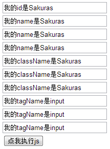

HTMLDocument对象就是页面的文档节点。想要获取这个对象很简单，一句Document就ok了。
这个对象提供了很多方法用于访问页面内的元素，我们来一一介绍。
例2：有如下页面，填写相应test函数体，执行后能更改id为Sakuras的元素的value为“一个id最多只能对应一个元素”。

HTMLExample2.html
解释：本例将介绍使用getElementById方法。
步骤：
HTMLExample2.html
代码只有一行，我们来分析一下。
首先一个document获取到文档节点，然后调用getElementById方法获取到元素节点，再调用value来直接修改它的属性。
同一个页面文档中，不允许有相同id的元素出现，也就是说，一个id最多只能对应一个元素。当然不排除一个不规范的页面会乱写。
例3：在例2的页面中，填写相应test函数体，执行后能更改第2个name为Sakuras的元素的value为“一个name可以对应多个元素”。
解释：本例将介绍使用getElementsByName方法。
步骤：
HTMLExample3.html
由于name可以对应多个元素，因此getElementsByName获得的是一个集合，我们还需要通过数组下标的方式获取到具体的元素。
与getElementsByName类似的还有getElementsByTagName，getElementsByClassName。关于这俩个方法，就不具体介绍了。
好啦，这一节就到这里，我们来总结一下：
练习1：在例2的页面中，填写相应的test函数体，执行后能更改所有的className为Sakuras的元素的value为“并非所有浏览器都支持getElementsByClassName方法”。